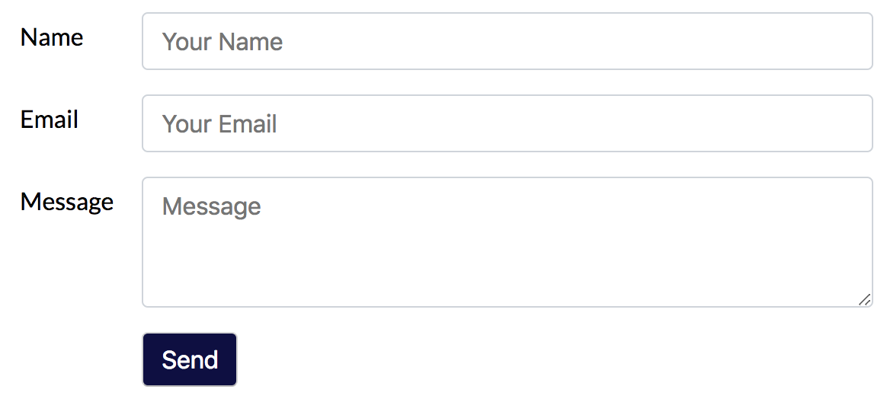
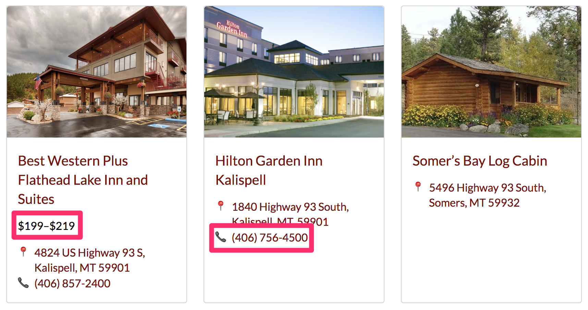

name: section layout: true class: center, middle --- name: normal layout: true class: top, left .footer[ Questions? <i class="fa fa-twitter" aria-hidden="true"></i> [@zukefresh][] | <i class="fa fa-github" aria-hidden="true"></i> [gsong](https://github.com/gsong) ] --- template: normal name: code layout: true class: middle, left --- template: normal name: center layout: true class: center, middle --- template: section # 👩💻 User-Centered Testing of React Components ⚛ George Song <i class="fa fa-twitter" aria-hidden="true"></i> [@zukefresh][] <i class="fa fa-github" aria-hidden="true"></i> <https://github.com/gsong> --- template: code # User-Centered? .large[ * How would your customer interact with the component? * How do you best communicate the intent of the test? ] --- template: normal ## How Do You Test a Presentational Component? --- template: code # How Do You Test a Presentational Component? .large[ * What does the user see? * With what does the user interact? * How to succinctly communicate the important bits to another developer? * [Card test](https://github.com/gsong/birky50/blob/development/src/components/shared/__tests__/Card.js#L10-L25) * [Address link test](https://github.com/gsong/birky50/blob/development/src/components/shared/__tests__/Address.js#L9-L16) ] --- template: normal ## How Do You Test a Form Component?  --- template: code # How Do You Test a Form Component? .large[ * What does the user see? * With what does the user interact? * How to succinctly communicate the important bits to another developer? * [Form test](https://github.com/gsong/birky50/blob/development/src/components/__tests__/ContactUs.js#L8-L22) ] --- template: code # How Do You Test for Style Changes? .large[ * Snapshots * [Address snapshot](https://github.com/gsong/birky50/blob/development/src/components/shared/__tests__/__snapshots__/Address.js.snap#L4-L13) * [Card snapshot](https://github.com/gsong/birky50/blob/development/src/components/shared/__tests__/__snapshots__/Card.js.snap#L28-L37) ] --- template: normal ## How Do You Test for Optional Props?  --- template: code # How Do You Test for Optional Props? .large[ * Snapshots * [Card test](https://github.com/gsong/birky50/blob/development/src/components/shared/__tests__/Card.js#L43-L51) * [Card snapshot](https://github.com/gsong/birky50/blob/development/src/components/shared/__tests__/__snapshots__/Card.js.snap#L105-L134) ] --- template: normal # The Tools Used .large[ * [Jest](https://facebook.github.io/jest/) * Test runner * Test structure * Asserts * Snapshots * [react-testing-library](https://github.com/kentcdodds/react-testing-library) * Rendering component into DOM container * Selector utilities * Fire DOM event * [faker](https://github.com/marak/Faker.js/) ] [@zukefresh]: https://twitter.com/zukefresh